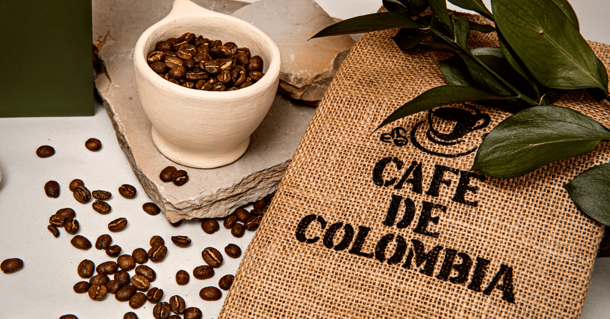

Welcome to My Webside
Hello! I'm a full-stack developer specializing in back-end technologies, with a passion for creating scalable and efficient software solutions. My expertise lies in building robust back-end systems, crafting seamless user experiences, and optimizing code for high performance.
LUIS ANTONIO CANTOR SOTOMAYOR
-----------------------------------
Results-driven entrepreneur with hands-on experience in all aspects of business, from operations to finances, and from HR to marketing. Skilled in backend development, including databases, APIs, and server-side logic, with a foundational understanding of full-stack development. Bilingual in English and Spanish.
-----------------------------------
Work Experience
INSUPAN S.A.S.,
Bogotá D.C. (Colombia)
2015 – 2017
Invoices Assistant
• Registered invoices
Hyatt Hotels Corporation,
Incline Village, Nevada (USA)
May – August 2017
Steward (Seasonal Job)
• Transported food and supplies within the hotel to ensure all departments had the necessary resources for daily operations.
Hacienda De La Sierra,
Incline Village, Nevada (USA)
Jun – August 2017
Busser (Seasonal Job)
Credicorp Capital Colombia,
Bogotá D.C. (Colombia)
January – July 2019
Equity Research Intern
• Supported equity analysts with database management and report creation.
• Translated reports.
Access ID S.A.S.,
Bogotá D.C. (Colombia)
2020 – Present
Owner/General Manager
• Founded the firm from scratch and participated in all facets of the company.
• Managed projects, developed detailed project plans that include scope, cost, schedule, and quality.
INSUPAN S.A.S.,
Bogotá D.C. (Colombia)
2021 - 2022
Commercial Manager
• Price management
• Customer credit control
• Supported sellers during the sales process
• Implemented a new sales system that enabled the company to manage pricing and customer credit, resulting in a significant reduction in errors and staff required in the invoicing department.
Teleperformance Colombia S.A.S.,
Oct – Jan 2021
Bilingual Agent
• Customer Service Agent for an Uber Eats campaign in the USA.
-----------------------------------
Education
Bachelor’s Degree in International Business Administration
Universidad del Rosario,
Bogotá D.C., Colombia
2014 - 2020
AEC in Information Technology Programmer-Analyst
LaSalle College Montréal,
Montréal, Qc, Canada
2023 - Present
-----------------------------------
Courses and Certifications
Business Administration and Economics
(Bachelor's Exchange Program)
Universität Passau,
Passau, Germany
2018
Coaching Training for Personal Brand Development
Fundación universitaria Konrad Lorenz,
Bogotá D.C., Colombia
2014
-----------------------------------
Languages
English, C1
Spanish, Native
About Me
Hi, my name is Luis, and I was born in Bogotá, Colombia.
Colombia is known for its diverse culture, beautiful landscapes, and vibrant cities. Bogotá, the capital, is a bustling metropolis that offers a mix of modernity and tradition. You can find a rich history in the streets of La Candelaria, the historic district, alongside modern architecture and art scenes.

Colombia is famous for its coffee. The country is one of the largest coffee producers in the world, and its coffee-growing region, often called the "Coffee Triangle," is a UNESCO World Heritage Site. Additionally, Colombia has a rich biodiversity, with tropical rainforests, beautiful beaches in places like Cartagena, and the unique landscapes of the Tatacoa Desert and Caño Cristales, often referred to as the "river of five colors."
One of my favorite activities is climbing. Whether it's bouldering in an indoor gym or climbing real rocks outdoors, climbing is a fantastic way to stay fit and test your physical and mental strength. When you climb, you need to think creatively to find the best route to the top, making it a perfect blend of problem-solving and physical exertion.
Climbing outdoors is especially fun because it allows you to connect with nature. The sense of accomplishment when you reach the top of a route is exhilarating, and the views are often breathtaking. Climbing is also a great community activity. You meet people who share the same passion, and there's a sense of camaraderie among climbers as they help each other with tips and encouragement.